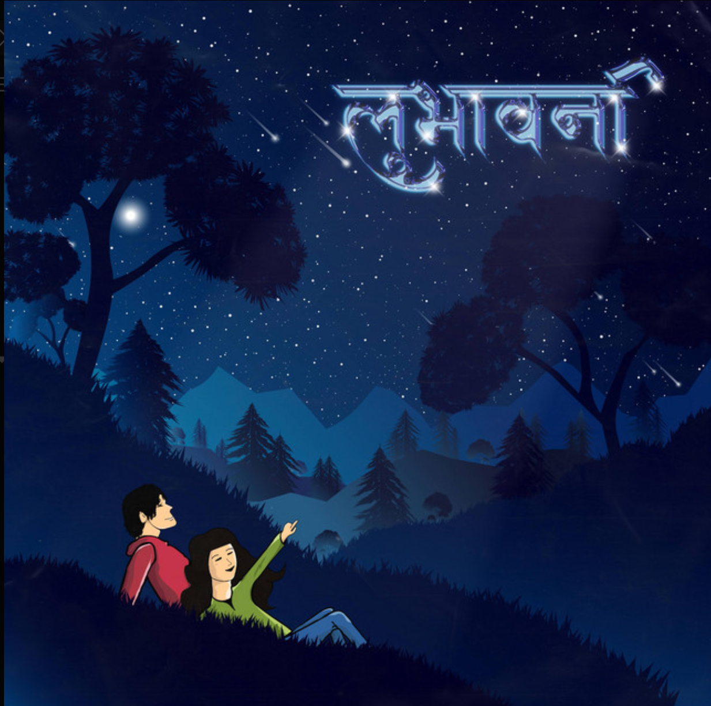
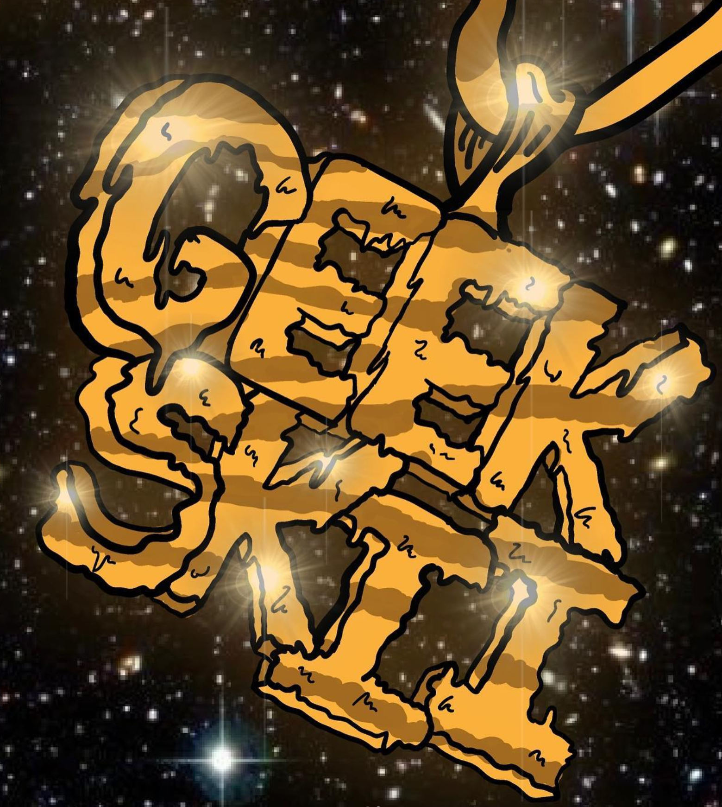
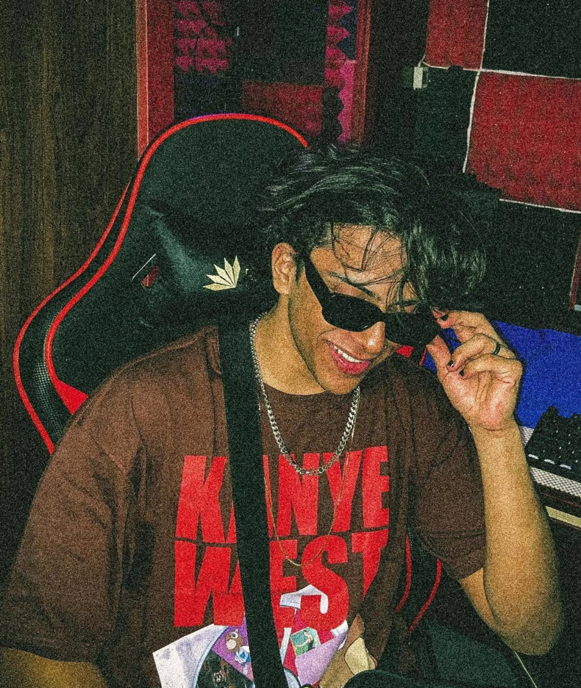

A small independent imprint with its own visual world.
GEEKSKII RECORDS brings together my interest in music and visual identity. My work around the imprint has covered distribution, release management, cover artwork, marketing and promotion, mixing and mastering.
The artwork below is part of the visual archive. Each release is treated as more than an audio file: the cover, presentation and context all contribute to how a listener encounters it.
Visit official YouTube
Visual archive 01Artwork

Visual archive 02Artwork

Studio archiveIndependent music

Behind the imprintFounder
Official channel: youtube.com/channel/UCDNNR2lTYiixJgttXP1RQTg